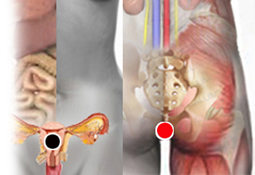
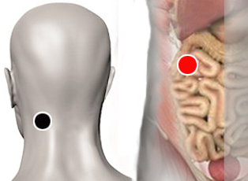

Intolerancias alimentarias
Par
útero - recto

Introducción:
La diferencia entre las alergias y las intolerancias alimentarias es que la reacción del cuerpo y los síntomas son distintos. Las alergias comunmente se manifiestan con alteraciones en la piel, irritación, vías respiratorias y procesos inflamatorios generalizados. Las intolerancias a alimentos afectan principalmente al proceso digestivo.
Según la alopatía la intoleración a diversos alimentos obedece, sobre todo a factores genéticos. La edad también influye en la aparición de este tipo de afecciones, por ejemplo en el caso de la lactosa, que disminuye la encima lactasa, conforme aumenta la edad de la persona. En el caso de la intolerancia al gluten pueden existir los marcadores genéticos, sin que la persona padezca los síntomas. Los patógenos agregan un factor más a la ecuación según ha descubierto el Dr. Isaac Goiz Durán.
Intolerancia a la lactosa:
Causada por la incapacidad para digerir la lactosa (proteína presente en la leche y sus derivados). La persona sufre de trastornos digestivos como inflamación, cólicos, cuando consume productos lácteos. Es importante destacar que entre mayor edad tiene una persona más probabilidades tiene de desarrollar esta condición, por lo que se sugiere que los adultos reduzcan o eliminen el consumo de lácteos. También se han observado marcadas diferencias entre las distintas razas humanas.
Proteus Mirabilis y el Clostridium Perfringes son los principales patógenos que detonan esta afección.
Intolerancia al Gluten:
También conocida como Celiaquía o Enfermedad Celiaca. El gluten es un grupo de proteínas contenidos en algunos cereales, principalmente en la Avena, Trigo, Cebada y Centeno, tiene una consistencia "chiclosa" por lo que es apreciado para elaborar varios tipos de alimentos.
El efecto del gluten en el intestino delgado es devastador, ya que destruye los tejidos, impidiendo la absorción de los diversos nutrientes y esto trae mútliples consecuencias: pérdida de peso, falta de apetito (anorexia), fatiga, nauseas, vómito, diarrea, distensión abdominal, pérdida de masa corporal, retraso en el crecimiento, meteorismo, dolores abdominales, alteraciones de carácter (irritabilidad, apatía, depresión, introspección, tristeza). También puede presentar síntomas atípicos, lo que dificulta su diagnóstico. Se puede confundir con otras enfermedades. Se estima que un 70% de las personas que lo padecen no han sido diagnosticadas correctamente.
Si no se diagnostica en edad temprana puede causar múltiples enfermedades como:
La medicina alopática no tiene cura contra esta afección, la única solución es suspender completamente la ingesta del gluten, observando muy bien los alimentos que se ingieren.
Por otra parte , el par biomagnético ha encontrado que los pares que con mayor frecuencia son factores detonantes de esta condición son: Estafilococo Aureo (+) , Estafilococo Aureo (-) y Vellonela.
Esto nos lleva a la teoría de que se debe mantener una microbiota intestinal saludable, ya que las bacterias ayudan a descomponer la proteína del gluten. La infección por otros agentes patógenos altera este equilibrio, pudiendo ser el factor detonante del padecimiento.
Intolerancia a Oleaginosas:
Pares
mastoides - duodeno
occipital - duodeno

Las oleaginosas también son conocidas como frutos secos que incluyen: nueces, almendras, pistaches, cacahuates, avellana, entre otras. Algunos consideran que estos alimentos causan reacciones alérgicas, más que intolerancias alimentarias, las nueces son las que con mayor frecuencia pueden causar trastornos leves o severos como una reacción anafiláctica. Se recomienda tener mucho cuidado con los alimentos que se ingieren y leer las etiquetas.
En esta sección: